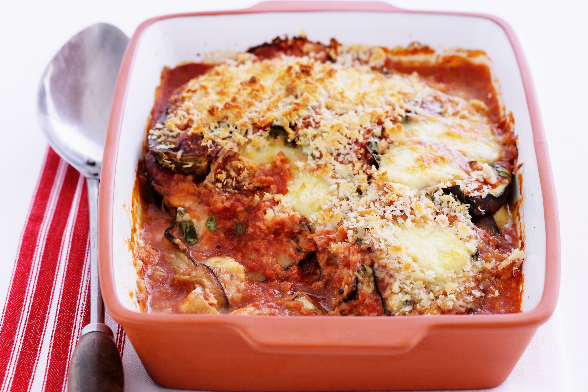

Eggplant Parmesian

Ingredients
- 3 Large eggplant (peeled & thinly sliced)
- 2 Large eggs (beaten)
- 4 Cups Italian seasonsed bread crumbs
- 6 Cups spaghetti sauce (Divided)
- 1 (16ounces) package mozzarella cheese (Shredded & Divided)
- 1/2 Cup grated Parmesan cheese (Divided)
- 1/2 Teaspoon dried basil
Directions
- Preheat the oven to 350 degrees F (175 degrees C)
- Dip eggplant slices in beaten egg, then in bread crumbs to coat. Place in a single layer on a baking sheet
- Bake in the preheated oven for 5 minutes. Flip and bake for 5 more minutes
- Spread spaghetti sauce to cover the bottom of a 9x13-inch baking dish. Place a layer of eggplant slices in the sauce. Sprinkle with mozzarella and Parmesan cheeses. Repeat layers with remaining sauce, eggplant, and cheese, ending with a cheese layer. Sprinkle basil on top
- Bake in the preheated oven until golden brown, about 35 minutes.
Nutrition Facts (Per Serving)
Servings Per Recipe: 10 | Calories: 487
- Total Fat: 16g (21% Daily Value)
- Saturated Fat: 7g (34% Daily Value)
- Cholesterol: 73mg (24% Daily Value)
- Sodium: 1663mg (72% Daily Value)
- Total Carbohydrate: 62g (23% Daily Value)
- Dietary Fiber: 9g (31% Daily Value)
- Total Sugars: 20g
- Protien: 24g
- Vitamin C: 5mg (25% Daily Value)
- Calcium: 512mg (39% Daily Value)
- Iron: 4mg (23% Daily Value)
- Potassium: 815mg (17% Daily Value)